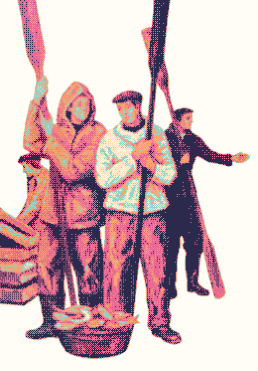
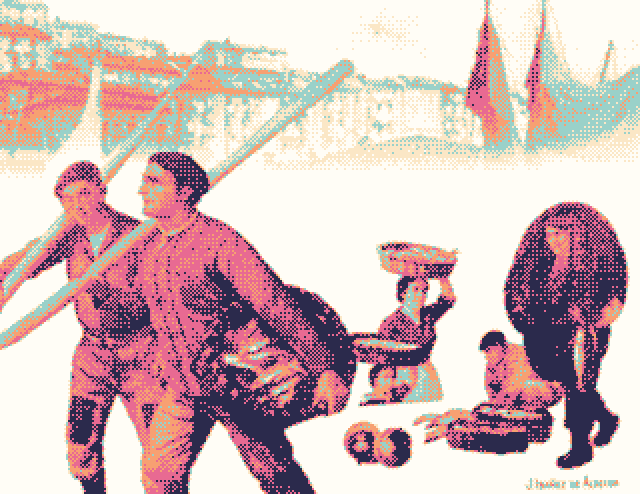
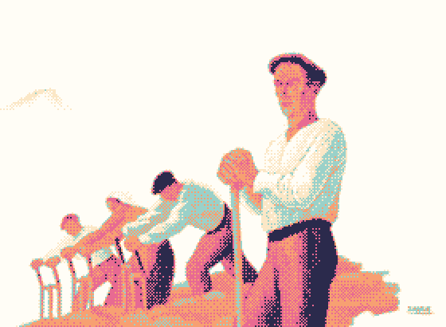
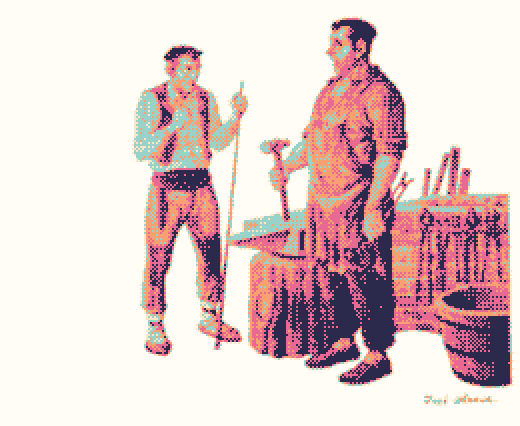

Now dithering ↓
Dithersummer
Your images, in four pastel colours and a Bayer matrix. A vintage desktop for very modern pixels, running entirely in your browser.
Now dithering ↓
Your images, in four pastel colours and a Bayer matrix. A vintage desktop for very modern pixels, running entirely in your browser.




